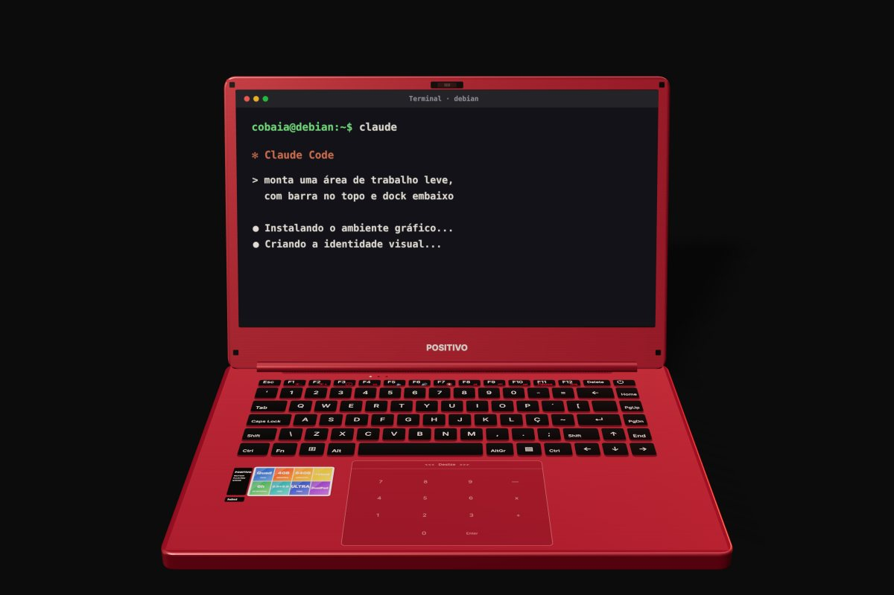

Esse experimento ainda está no laboratório
A página libera junto com o vídeo, às 12h. Falta:
o notebook que parecia lixo
Ressuscitei um notebook velho com o Claude
Um notebook que não aguentava abrir um app virou uma máquina rápida e bonita. Aqui está o jeito mais curto de fazer o mesmo: você prepara o pendrive, instala o Debian 13 e deixa o Claude cuidar do resto.
em 30 segundos
O resumo do vídeo
Notebook que "não liga" pode ser só a bateria descarregada demais. Teste antes de jogar fora.
Você só prepara o pendrive e instala o Debian 13 mínimo. É a única parte que fica na sua mão.
Com o sistema de pé, instala o Claude Code no próprio notebook. Ele monta a interface, a identidade visual e os apps.

passo zero
Antes de jogar fora, tente isso
Notebook parado por muito tempo pode estar com a bateria em descarga profunda. Parece morto, mas ainda tem conserto. Faça nesta ordem:
- 1Ligue o carregador e espereDeixe carregando de 1 a 2 horas antes de tentar ligar.
- 2Segure o botão de ligar por 30 a 60 segundosCom o carregador ligado. Depois solte e aperte uma vez.
- 3Procure o furinho de resetAlguns modelos têm um buraco pequeno embaixo. Aperte com um clipe.
No meu caso, a bateria estava em 2% e voltou. Se o seu continuar morto, use o pedido avulso A1 mais embaixo.
o que você precisa
A lista de materiais
- O notebook velho, de preferência com 4 GB de memória ou mais.
- Um pendrive de 8 GB ou mais, que será formatado.
- Outro computador, só para baixar o sistema e gravar o pendrive.
- Internet no notebook, por cabo, Wi-Fi ou o celular ligado por USB.
- Uma conta paga do Claude para usar o Claude Code. Eu usei o plano de R$ 100 por mês.
o problema
Por que ele ficou lento
Os sistemas atuais vêm cheios de apps e serviços rodando escondidos, e num notebook velho isso pesa. A saída foi apagar tudo e instalar um Linux leve do zero. Escolhi o Debian 13, sem interface nenhuma, e deixei o Claude montar só o que eu precisava.
o passo a passo
Do pendrive ao sistema novo
Este é o caminho mais curto. No vídeo eu dei muitas voltas até chegar aqui, e você pode pular todas elas.
Faça backup de tudo
Instalar do zero apaga o disco. Copie fotos e documentos para outro lugar antes de começar.
Baixe o Debian 13 e o Ventoy
No outro computador, baixe o Debian 13 em debian.org (imagem de instalação pela internet, netinst, 64 bits, arquivo .iso) e o Ventoy em ventoy.net. O Ventoy deixa o pendrive com espaço livre para você levar seus arquivos junto, e é isso que faz o passo 4 funcionar.
Prepare o pendrive
Abra o Ventoy2Disk, escolha o pendrive e clique em instalar. Depois copie o arquivo .iso do Debian para dentro do pendrive, como se fosse uma pasta comum. Tudo o que estava no pendrive some na primeira vez.
Salve os pedidos no pendrive
Mais abaixo tem o botão Baixar COBAIA-PEDIDOS.txt. Baixe e copie o arquivo para o pendrive, ao lado do .iso. Ele leva todos os pedidos prontos, na ordem, para você usar direto no notebook.
Ligue o notebook pelo pendrive
Com o pendrive espetado, ligue o notebook e aperte a tecla do menu de boot logo no início. Costuma ser F12, F2, Esc ou Del, e muda de marca para marca. Escolha o pendrive e, no menu do Ventoy, o Debian.
Instale o Debian
Escolha a instalação normal, português do Brasil e o disco inteiro com particionamento guiado. Na seleção de programas, desmarque tudo e deixe só os utilitários padrão do sistema. O Claude monta o resto depois. Se o Wi-Fi não aparecer, use cabo de rede ou compartilhe a internet do celular por USB.
Prepare o terminal
Reinicie e entre com o usuário que você criou. Digite su -, coloque a senha de administrador e rode apt update && apt install -y curl sudo git. Depois rode usermod -aG sudo SEU_USUARIO, saia e entre de novo.
Instale o Claude Code
Rode curl -fsSL https://claude.ai/install.sh | bash e depois claude. Ele mostra um link: abra no celular, entre na sua conta e cole o código de volta. Se o comando claude não for encontrado, feche e abra o terminal.
Deixe o Claude fazer o resto
Espete o pendrive, rode lsblk para achar a partição grande dele (algo como sdb1) e monte com sudo mount /dev/sdb1 /mnt. Dentro do claude, escreva: Leia o arquivo /mnt/COBAIA-PEDIDOS.txt e execute os pedidos na ordem, um por vez, esperando eu confirmar antes de passar para o próximo. Pronto: ele configura o sistema, monta a interface, a identidade visual e os apps.
o salto
Por que o Claude entra cedo
Instalar o Claude Code logo depois do Debian evita o trabalho mais chato. Com ele rodando no próprio notebook, você deixa de caçar tutoriais para cada driver e cada configuração. Pede em português, ele executa os comandos, lê os erros e corrige. Foi assim que ele montou minha área de trabalho, com barra no topo, dock e apps próprios.
resultado real
Os números
Para ligar, mesmo sem SSD.
MB de RAM só para ligar. Antes eram cerca de 850 MB.
segundo para o terminal abrir.
Apps mais rápidos.
YouTube fluido.
// medi no meu notebook. O seu pode dar números diferentes
o que você veio buscar
Os pedidos prontos
Use na ordem, um por vez. Se preferir, baixe tudo num arquivo e leve no pendrive (passo 4 do passo a passo).
Acabei de instalar o Debian 13 mínimo neste notebook. Configura o Wi-Fi, o som, o teclado em português do Brasil, o fuso horário e o brilho da tela. Faz uma coisa por vez e me avisa o que mudou.
Monta pra mim uma área de trabalho leve, com barra no topo e dock embaixo. Escolhe componentes que gastem pouca memória. Faz uma coisa por vez e me avisa o que mudou.
Cria uma identidade visual própria para o sistema: papel de parede, ícones, fonte e paleta de cores combinando. Aplica na barra, na dock e no terminal.
Instala um navegador leve, um gerenciador de arquivos, um leitor de PDF e um player de vídeo. Põe todos na dock.
Mede quanto tempo o notebook leva para ligar e quanta memória usa parado. Desliga o que não precisa rodar e mede de novo, me mostrando o antes e o depois.
Faz um app nativo simples que grava áudio pelo microfone. Me explica como abrir e testar.
avulsos
Meu notebook [modelo, ex.: Acer Aspire 5] não liga. Me ajuda a diagnosticar passo a passo, uma coisa por vez, começando pela bateria.
Deu esse erro: [cole o texto ou descreva o que aparece na tela]. O que eu faço?
cuidados
Leia antes de apagar o disco
Faça backup antes. Instalar do zero apaga o disco. Copie fotos, documentos e tudo o que importa pra outro lugar.
- 1Anote o modelo do Wi-Fi e do som antes de formatarSe algo não funcionar depois, você sabe o que pedir pro Claude procurar.
- 2Mude uma coisa por vezAssim, se algo quebrar, você sabe qual foi a causa.
- 3Leia o que o Claude vai rodar antes de aceitarEle pede sua permissão a cada comando. Se algo parecer apagar arquivos seus, pergunte o motivo antes.
palavras do vídeo
Glossário rápido
- Linux
- Um sistema para computador, alternativo ao que vem de fábrica. Existem versões bem leves.
- Debian
- Uma das versões de Linux mais antigas e estáveis. A 13 é a mais recente.
- Pendrive bootável
- Um pendrive com o instalador gravado, que o notebook consegue iniciar antes do sistema.
- Hash SHA256
- Uma "impressão digital" do arquivo. Se bater com a do site, o arquivo está íntegro.
- Terminal
- A tela onde você digita comandos. É onde o Claude Code roda.
- Claude Code
- O Claude dentro do terminal, capaz de rodar comandos e mexer nos arquivos do computador. Exige uma conta paga.
continua a série
Os outros experimentos
Os pedidos prontos pra copiar e usar o Claude com o Canva via MCP, e o passo a passo pra ligar sem programar.
DIA 07 · palavra TV →Como desligar os apps de anúncio da smart TV Android e Google TV com o Claude Code, sem desinstalar nada, com o pedido pronto pra copiar.